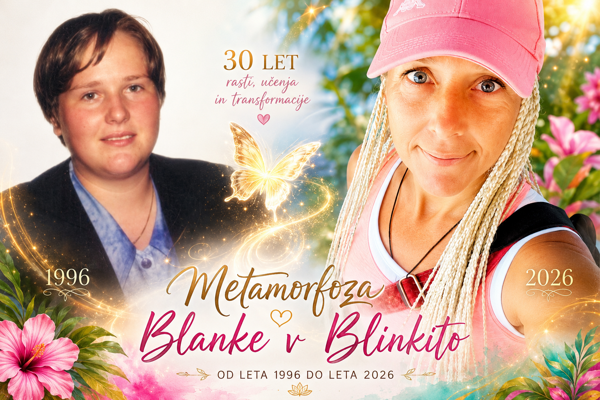
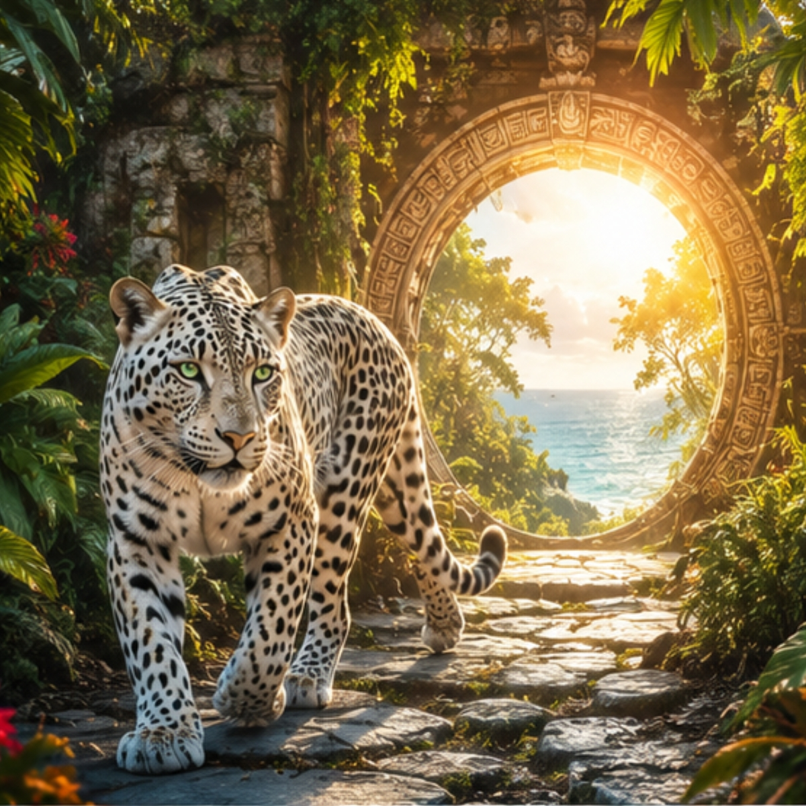

TZOLKIN PORTAL DNEVA
KODA ČASA
Spominjaš se, kar si že vedela.
Dobrodošla v Blinkita World
Od Slovenije do Belizeja.
Od notranjega šuma do jasnega pogleda.
Od identitete do spomina in do premika v načinu življenja.
Nekatere stvari se v življenju začnejo drugače razporejati.
Tempo se spremeni. Odločitve postanejo jasnejše.
Blinkita World deluje kot vstop v drugačen način zaznavanja časa in izbire.
Kar je bilo prej zmeda, se začne umirjati v strukturo.
Kar je bilo hrup, izgubi težo.
Če si tukaj, si že v premiku.
Nekateri kraji obstajajo na zemljevidu. Nekateri obstajajo v času.
Blinkita World ni spletna stran. Je prostor prepoznanja.
Tukaj se srečajo zgodbe, ki so dozorele za preobrazbo, vprašanja, ki iščejo svoj odgovor, in deli tebe, ki že dolgo čakajo, da jih ponovno uzreš.
Vsaka knjiga. Vsaka hipnoza. Vsaka aktivacija. Vsak portal,
te vodi k isti točki: spominu, kdo si pod vsemi vlogami, zgodbami in pričakovanji.
Karkoli te je pripeljalo sem, je že odprlo prva vrata.
Odpri vrata
Odpreš vrata, ki te pokličejo.
In že stojiš v njih.
Prehod iz zgodbe v zavest.

Blinkita je danes tudi oseba.
A še veliko več kot to.
Ime, ki ga ljudje uporabljajo, ko nagovarjajo polje preobrazbe skozi čas.
30 let rasti. učenja. raztapljanja stare identitete.
Od leta 1996 do 2026 - Metamorfoza Blanke v Blinkito.
Telo se je spremenilo.
Zavest se je razširila.
In ime je postalo vrata.
V tem prostoru velja starodavni princip In Lak’ech:
Ti si moj drugi jaz. Jaz sem tvoj drugi ti.
Kar se dotakne tebe, se premakne v obeh smereh časa.
Moja pot se je oblikovala skozi globoko notranjo transformacijo in metamorfozo življenja.
Iz telesa, iz zgodbe, iz identitete - v širše polje zavesti, kjer se človek začne spominjati samega sebe.
Leta posvetitve so me pripeljala v linijo varuhov časa.
Kot Saq I'x - Bela Jaguarka - sem bila posvečena v tok varovanja časa
s strani avtentičnega Maya ajq’ij, varuha koledarja in ambasadorja miru Tata Pedro Cruza v Gvatemali.
Ta posvetitev ni dogodek v preteklosti.
Je živa frekvenca, ki deluje kot notranji kompas - skozi čas, ljudi in odločitve.
Iz te linije se odpira Blinkita World —
ne kot projekt, temveč kot živi sistem, kjer se čas, zavest in človeška izkušnja srečujejo v isti točki.
Vsaka knjiga, vsaka hipnoza, vsak vpogled in vsak stik nosi isto nit:
prehod iz pozabe v spomin.
5 × 21-dnevna potovanja zavesti
5 × hipnoza preobrazbe
+ darilo: e-knjiga Trening zavesti
Celovit portal ponovne povezave s telesom, zavestjo in časom.
480 € 260 €
(čas ne čaka — samo prepozna)
Portal, kjer se čas ne meri - ampak odpre.
V ta prostor ne prideš kot turist. Vstopiš kot zavest, ki se spominja poti, po kateri je že hodila.
Med džunglo, oceanom in kamnitimi zapuščinami Majev se zgodi razpoka v času. In v tej razpoki se človek začne ponovno slišati.
Belize ni destinacija. Belize je živa frekvenca prehoda.
Tukaj se odvijajo retreati — kot zaprta vrata v odprt spomin: 15.08.–22.08., 12.09.–22.09., 07.11.–17.11., 12.12.–22.12.
Vsak termin je portal. Ne ponovi se znova. Odpre se le tistim, ki jih pokliče.
Poleg kratkih retreatov se odpirajo tudi globlja potovanja: 13, 20 in 33-dnevne poti po starodavnih poteh Majev v Belizeju - kjer se ne raziskuje le sveta, ampak preoblikuje način, kako ga doživljaš.
Leta 2027 se odpre še 9 novih potovanj. Vse skupaj 13 vrat v isto smer: vrnitev v stik s sabo skozi prostor, ki te ne pusti enakega.
Nekateri pridejo po oddih. Nekateri po premik. Nekateri pa po nekaj, česar še ne znajo poimenovati - a ga v sebi že prepoznajo.
Vsako potovanje tukaj je prehod. Vsak prehod je spomin.
Več kot 200 inicacijskih digitalnih knjig.
Več kot 200 prehodov v zavest.
Tukaj znanje ne ostane na površini. Vstopa v telo, v spomin in v način, kako doživljaš sebe.
Vsaka knjiga odpira svoj sloj. Vsaka hipnoza premakne strukturo. Vsaka aktivacija spremeni način, kako se čas čuti v tebi.
To ni knjižnica vsebin. To je živa arhitektura preobrazbe: knjige, hipnoze, zvočne aktivacije, delovni zvezki, izzivi in notranja potovanja.
Nekateri vstopijo skozi besedo. Nekateri skozi izkušnjo. Nekateri skozi premik, ki se zgodi med vrsticami.
Tukaj se branje spremeni v utelešenje. In razumevanje v spomin.
Vprašanja tukaj dobijo prostor.
Odgovori pa obliko.
Čas me spremlja že od otroštva. Medtem ko so drugi gledali dneve, mesece in leta, sem jaz zaznavala vzorce pod površjem časa.
Že kot deklica sem vedela, da na koledarjih nekaj manjka. Ne številke. Ampak živost med njimi.
Danes to prepoznavam kot inteligenco časa. Ne kot linijo, ampak kot živo polje, ki se skozi zavest nenehno spominja samega sebe.
To zaznavanje je postalo temelj mojega dela: hipnoze, terapije, aktivacije in prehodi zavesti.
Kot Saq I'x - Bela Jaguarka - sem bila posvečena v linijo varuhov časa s strani Tata Pedro Cruza.
Danes spremljam ljudi skozi prehode, kjer se preteklost, sedanjost in potencial srečajo v eni točki.
Čas se ne premika mimo tebe.
Čas se skozi tebe spominja samega sebe.
Online individualne terapije • holistični coaching • delavnice • ceremonije
250 € 130 €
Otvoritvena cena velja do konca meseca junija - kot prehod, ne kot ponudba.
Po opravljenem plačilu pošlji potrdilo na info@blinkita.si ali WhatsApp +5016084121 in si rezerviraj svoj termin.
Nekateri iščejo odgovore.
Nekateri iščejo ljudi, ki razumejo vprašanja.
Obstajajo trenutki, ko človek spozna, da ni tukaj zato, da bi hodil svojo pot sam.
Blinkita Circle ni skupina. Je živo polje ljudi, ki jih povezujejo čas, zavest in želja po resnični preobrazbi.
To je prostor za tiste, ki jih privlačijo portali, sinhronicitete, globlja vprašanja, notranji premiki in skrivnosti življenja, ki jih ni mogoče razložiti samo z razumom.
Tukaj se srečujejo vpogledi, aktivacije, izzivi, pogovori, ekskluzivne vsebine, dogodki in ljudje, ki govorijo jezik srca.
Nekateri pridejo po odgovor. In odkrijejo sebe.
Nekateri pridejo po znanje. In odkrijejo skupnost.
Nekateri pridejo iz radovednosti. In ostanejo, ker prepoznajo svoj krog.
Če si našla to stran, obstaja možnost, da Circle že nekaj časa išče tudi tebe.
Ekskluzivne vsebine, aktivacije, skupinski dogodki, vpogledi in druženje z ljudmi, ki hodijo podobno pot.
✨ Vstopi v Blinkita CircleNekatere poti se začnejo z vprašanjem.

Zakaj se vračam v iste zgodbe?
Zakaj se določeni vzorci ponavljajo?
Kaj želi skozi mene zaživeti v naslednji obliki?
Blinkita World ni odgovor.
Je prostor, kjer se vprašanja začnejo premikati.
Tukaj se srečajo čas, identiteta, zavest in prehodi,
skozi katere človek ne postaja nekdo drug —
ampak bolj to, kar je ves čas bil.
V tem polju se združijo zgodbe, cikli, vpogledi, knjige, hipnoze,
Koda Časa, Belize in skupnost ljudi,
ki začnejo prepoznavati svoj edinstven časovni podpis.
Vsak prehod nosi vprašanje.
Vsako vprašanje odpira vrata.
Vsaka vrata vodijo bližje sebi.
Vsaka zgodba ima trenutek, ko se vprašanje sreča z odgovorom.
Vsak prehod ima trenutek, ko človek prepozna, da je pripravljen stopiti naprej.
Morda te je sem pripeljala radovednost. Morda klic. Morda želja po spremembi. Morda nekaj, kar je svojo obliko iskalo že dlje časa.
Ne glede na pot, si tukaj.
In morda je ravno ta trenutek začetek poglavja, ki ga boš nekoč prepoznala kot prelomnico.